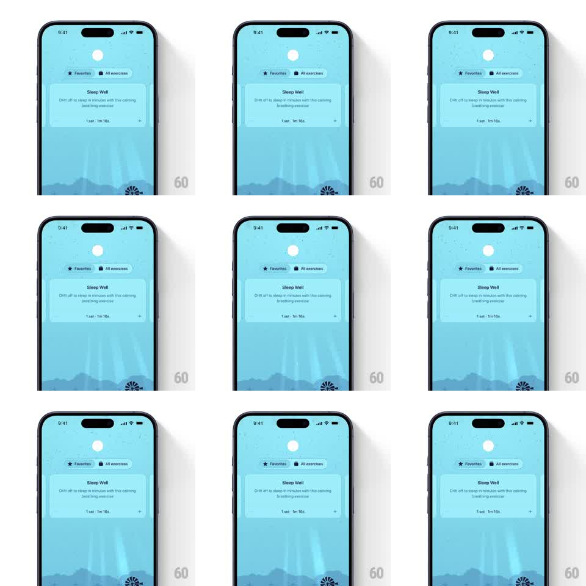

Media
Frame-by-frame

Rebuild this effect 1:1: Unwind's ambient rain drops - gentle raindrop ripples falling across the meditation app's illustrated sky background behind the content cards.

Rebuild this effect 1:1: Unwind's ambient rain drops - gentle raindrop ripples falling across the meditation app's illustrated sky background behind the content cards. ## Integration Integration: stack-agnostic spec - springs given as stiffness/damping, timed motions as duration + curve; map every value to your framework and animation library of choice. ## Scene Unwind's exercise list screen: pale blue illustrated sky with layered mountain silhouettes, a glowing sun/moon disc top center, and a "Sleep Well" exercise card floating mid-screen. Over the background illustration, sparse raindrops land and ripple. ## Motion spec Pattern: ambient looping ripple field. - Raindrops spawn at random x positions in the sky area every ~400-900ms (randomized interval, deterministic seed per session). - Each drop is a tiny bright speck that falls 20-40px over ~250ms, then lands and expands into a ripple ring: ring radius 0 to ~28px while opacity fades 0.5 to 0 (600ms, ease-out); a second fainter echo ring follows 120ms behind. - Ripples that land on the mountain layers render slightly smaller and dimmer (depth cue, ~0.7x scale/opacity). - The background illustration breathes almost imperceptibly: sun disc glow pulses +-4% opacity on a 6s loop; content cards stay perfectly still. - The effect loops indefinitely at low intensity - never more than ~6 active ripples. ## Calibration - This is ambience, not weather: drops are sparse and soft; the screen must remain calm and readable. - Ripple rings are thin (1.5px stroke), white with screen-blend softness against the blue. ## Reduced motion Static background; ripples disabled. ## Don't miss - Ripples expand and fade - they never pop or bounce. - The effect lives behind all UI cards; nothing interactive sits in the ripple layer.